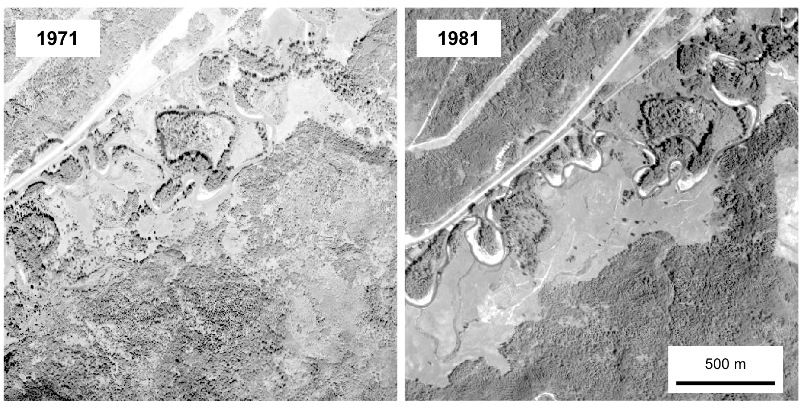

Footprints, selection and georeferencing for British Columbia’s historic airphotos.
fly helps you find and use British Columbia’s historic airphotos. The province’s catalogue records where each photo was taken, but not the ground it shows. fly works that out for most photos, finds the photos over your study area, picks a small set that covers as much of it as you need, and can download the photos and place them on a map.
Older photos often show a site before roads, farming and logging changed it. That makes them a reference for what to restore toward, and a baseline for measuring change.
With an elevation model, fly allows for the height of the land under the aircraft, which makes the footprints of film photos more accurate, and it corrects the errors it can identify in the catalogue’s flying heights.

The upper Bulkley River (Neexdzii Kwa) near McKilligan Road and Houston, BC, in 1971 and 1981, placed on the map by fly. Each photo sits on its own estimated footprint, so features line up approximately rather than exactly.
Installation
pak::pak("NewGraphEnvironment/fly")Functions still change between releases (NEWS), so pin a version for repeatable work: pak::pak("NewGraphEnvironment/fly@vX.Y.Z").
Example
Twenty 1968 photos of the Upper Bulkley River floodplain near Houston, BC, ship with the package. How much of the floodplain each scale covers, and the fewest photos that cover 80% of it:
library(fly)
centroids <- sf::st_read(system.file("testdata/photo_centroids.gpkg", package = "fly"), quiet = TRUE)
aoi <- sf::st_read(system.file("testdata/aoi.gpkg", package = "fly"), quiet = TRUE)
fly_coverage(centroids, aoi, by = "scale")
#> # A tibble: 2 × 4
#> scale n_photos covered_km2 coverage_pct
#> <chr> <int> <dbl> <dbl>
#> 1 1:12000 10 14.8 59.5
#> 2 1:31680 10 24.8 100
selected <- fly_select(centroids, aoi, mode = "minimal", target_coverage = 0.8)
#> Selecting photos (target: 80% coverage)...
#> 3 photos -> 81.6% coverage
#> Selected 3 of 20 photos for 81.6% coverageFrom there, fly_fetch() downloads the photos’ thumbnails and fly_georef() writes each one as a GeoTIFF on its footprint.
Learn more
- Airphoto selection pipeline: footprints, coverage, selection and georeferencing on the bundled floodplain.
- stac-airphoto-bc: photos georeferenced with fly, to browse and download by place and date.
- Method notes: how footprints are sized from the terrain, how the catalogue’s heights and camera formats are checked, and how scans are masked and placed.
- Function reference.
Ecosystem
| Package | Role |
|---|---|
| fresh | Stream network modelling engine: segment, classify, cluster, aggregate |
| link | Intrinsic habitat models: develop, test and communicate |
| wet | Stream flow and water temperature for BC’s Freshwater Atlas |
| flooded | Delineate floodplain extents from DEMs and stream networks |
| drift | Track land cover change within floodplains over time |
| floodplains | Floodplain and land cover change modelling for BC watershed groups |
| stac_floodplains_bc | STAC catalogue of floodplain land cover change in BC, 2017-2023, by watershed group |
| cd | Climate departure analysis from ERA5-Land reanalysis |
| fly | Estimate airphoto footprints and select photos that cover a study area (this package) |
| stac_airphoto_bc | STAC catalogue of historic BC airphotos georeferenced with fly |
Historic airphotos: fly (footprints, selection, georeferencing) → stac_airphoto_bc (published)
Data and methods it builds on
- The province’s airphoto centroids in the BC Data Catalogue, with the thumbnails, flight logbooks, camera calibration reports and camera files the records link to.
- NRCan’s MRDEM-30 elevation model, the one the height checks were measured against.
- GDAL, through sf, for warping and masking the scans.
Citation
Cite fly with citation("fly"), or from CITATION.cff.